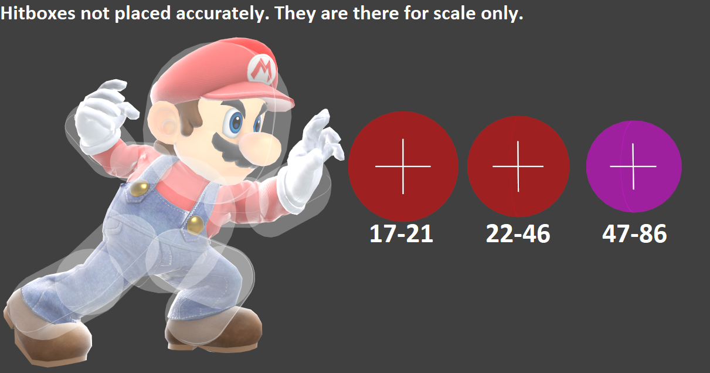
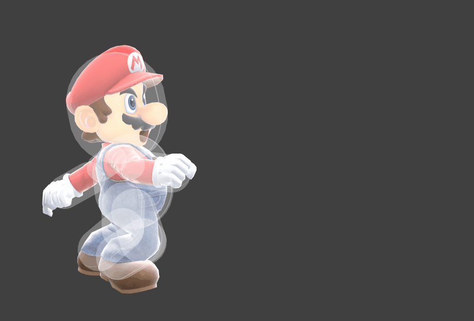
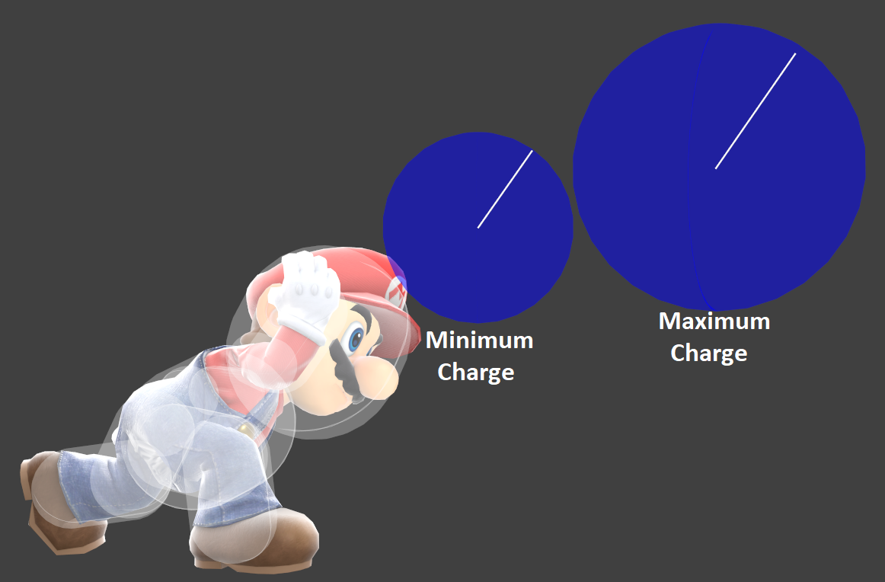

MARIO!
Neutral Special
- 17 Frame Startup
- Active on 17-21(22-46/47-86)
- -- Frames End Lag
- -23 On Shield

Side Special
- 12 Frame Startup
- Active on 12-14
- 21 Frames End Lag
- -16 On Shield

Up Special
- 3 Frame Startup
- Active on 3-6/7-16/17-18
- -- Frames End Lag
- -- On Shield
Down Special
- 2(+19) Frame Startup
- Active on 21
- -- Frames End Lag
- -- On Shield

How to use Marios Frame Data to his advantage:
Home